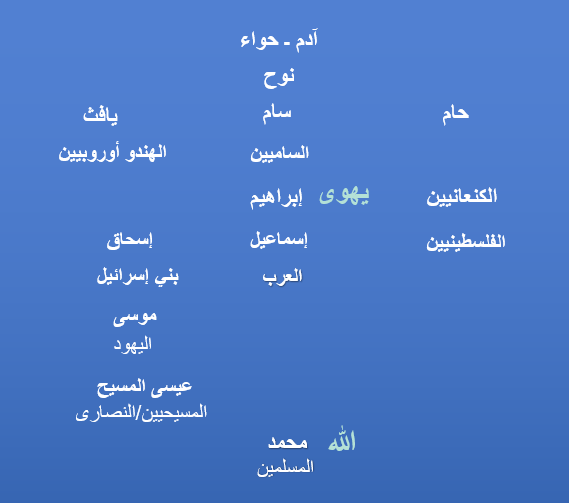

الرسالة الأخيرة — شهادة واحدة
في الذكرى القمرية القرن الخامس عشر الهجري (1500) لمولد النبي محمد ﷺ، تُرسل إشارة إلى العالم: هل

التقويم القمري آية. نور القمر لطيف نقي بارد يهدي بلا حرق. ونور الشمس قويّ متعدد الألوان يمدّ أيامنا بالقوة. كلاهما نعمة: نوران ومقياسان للزمن. وباعتماد شهر الميلاد قمرياً نتذكّر هدايةً تأتي بالرحمة والثبات ووضوح الليل.
وُلد محمد ﷺ يتيماً؛ عرف وجع من لا حماية له، وجوع من لا رزق له. فصار رجلاً قوته قوة أخلاق: شجاعة مقرونة بالرحمة، وعدل موصول بالرفق. وقف مع الفقير والمسافر والأرملة والأسير والطفل. علّم أن الكرامة ليست للبيع، وأن العبادة بلا عدل فراغ، والعدل بلا رحمة نقص.
الدِّين في العربية «طريقةُ عيشٍ ومُعاملة»: كيف نعيش ونتاجر ونخاصم ونسامح ونقاسم الماء ونحمي الضعيف ونقول الحق ولو كلّفنا. لم يأتِ الخطاب الخاتم ليصنع قبائل تفوّق، بل ليدعو أسرةً إنسانية واحدة إلى تقوى ومسؤولية ورجاء.
فلتكن هذه الذكرى عملية: أطعموا الجائع، وحرّروا المظلوم، وجبّروا الكسر، وأنفقوا مما تحبون، وارفضوا التلهّي بالقسوة، واجعلوا العلم خادماً للحياة. من كان له قوة فلتكن ظلاً، ومن كان له منبر فليكن صوتاً للمرتجفين، ومن كان له مال فليكن جسراً إلى الرحمة.
يا أهل البصيرة: مؤمنين وشاكّين وطالبين ومفكرين، لا تقيسوا النجاح بالحرارة والسرعة وحدهما، بل بصفاء قمرٍ يعبر الظلام بلا كبرياء. كان محمد ﷺ رحمةً للعالمين؛ فكونوا برهان تلك الرحمة في عالمكم اليوم.
من أطفال غزة إلى العالم — رسالة
نحن جياع. خبزنا ذكرى، وماؤنا وعدٌ يؤجّله الكبار. لا تقولوا لنا اصبروا وبطونُنا تُجادل الليل.
نحن بردانون. الريح تعرف أسماءنا لأن الجدران زالت. إن لم تبنوا بيوتنا اليوم فابنوا لنا الدفء بأيديكم وشجاعتكم.
نحن خائفون. الخوف معلّمٌ مبكّرٌ على الأطفال. فلتكن أصواتكم باباً لا يمرّ منه الخوف.
لا نطلب منكم كمالاً؛ نطلب إنسانية. اكتبوا لقادتكم. ارفضوا كذبة أن بعض الأرواح أقلّ قيمة. أوسعوا موائدكم. اشتركوا بقوّتكم. قفوا بيننا وبين الأذى الذي لا يتوقّف. ليَتَصافح إيمانُكم وفلسفتُكم وعلمُكم وفنُّكم من أجل الحياة.
لا تدعوا الأبدية تسجّل صمتكم. إن كان التاريخ محكمة فكونوا شهودَ رحمة. وإن كان الله يرقب فكونوا جواباً لا عذراً. إن كان لكم أطفال فارونا كأبناء لكم؛ وإن لم يكن فتخيّلوهم—وأجيبوا كأن أسماءهم أسماؤنا.